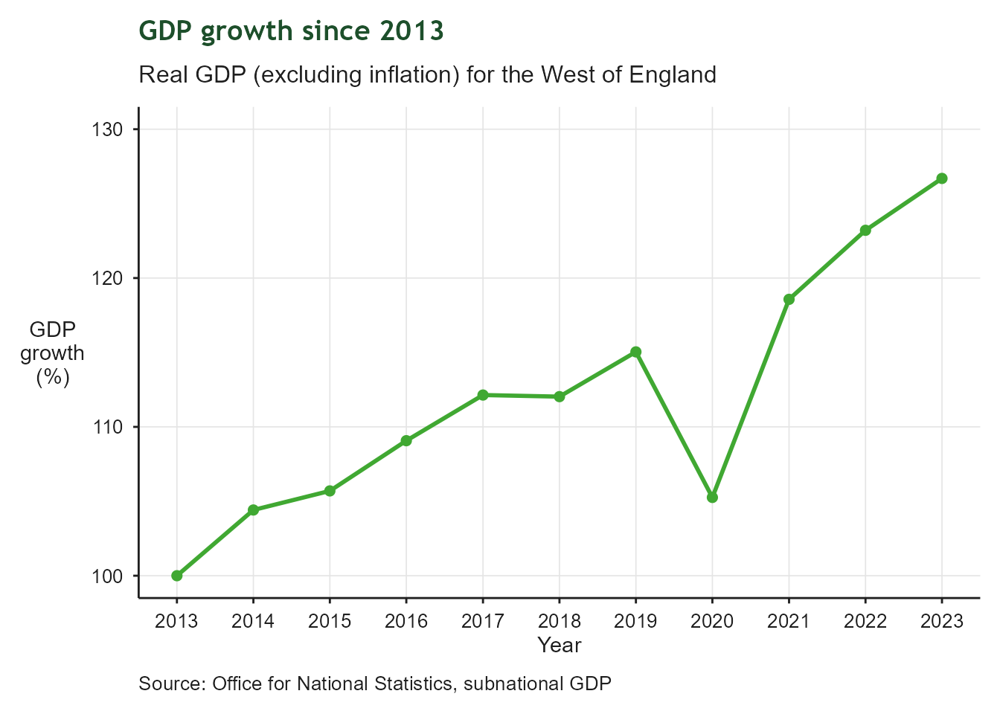
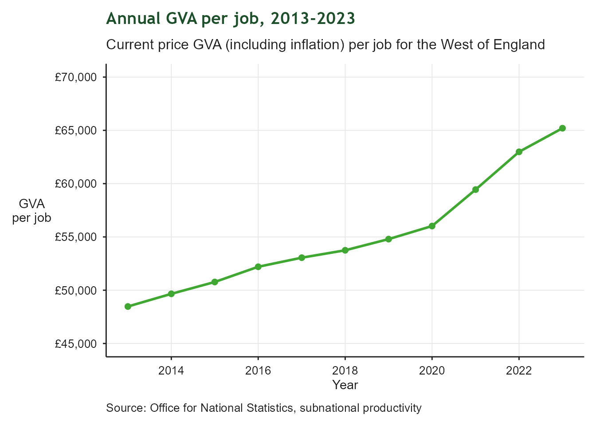
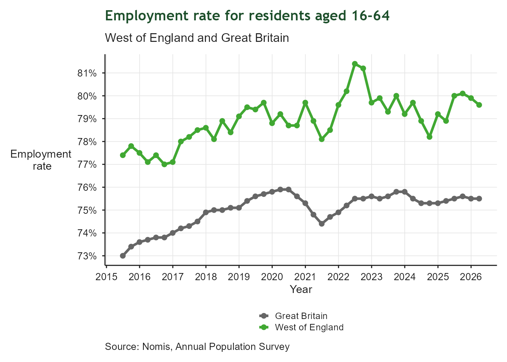
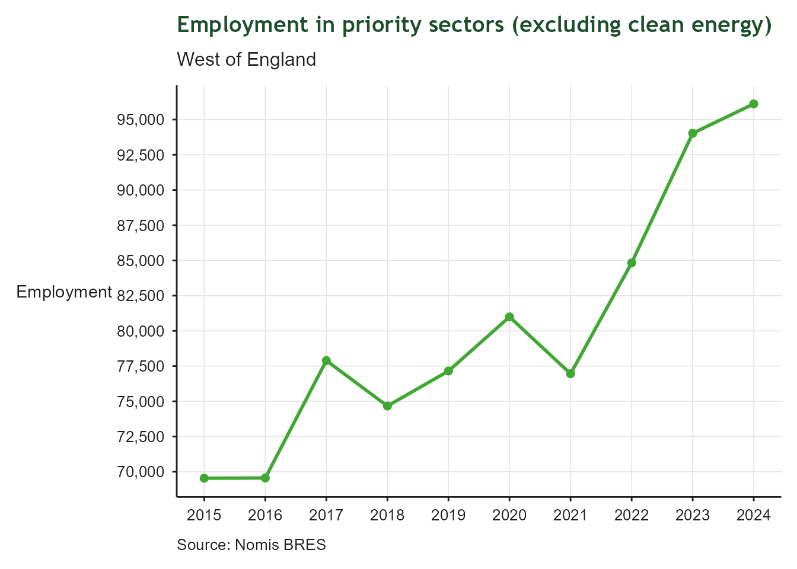
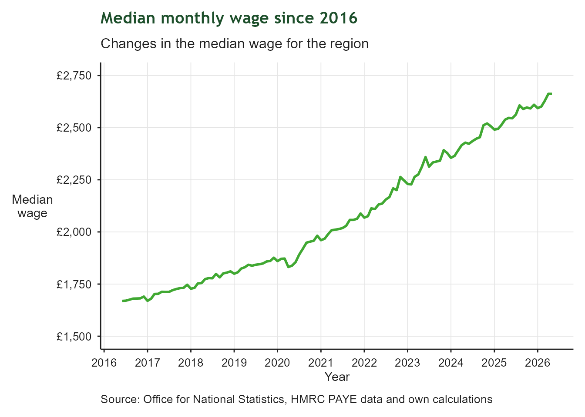
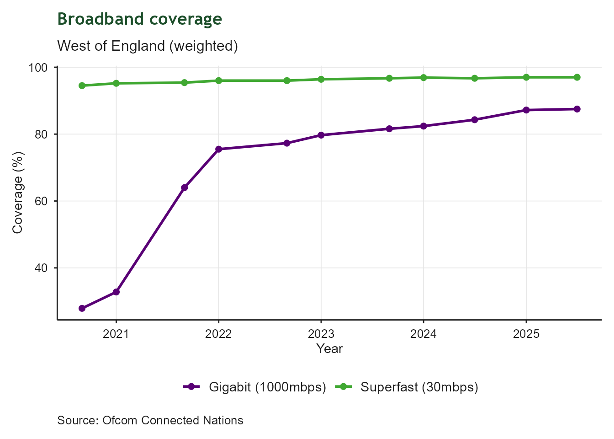
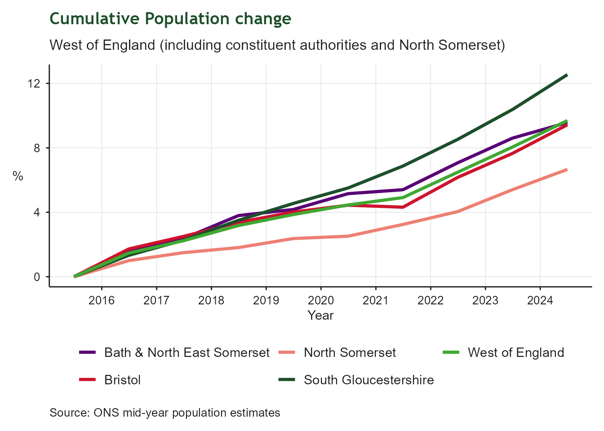

| Economic Growth: Indicator Summary | ||||
| Indicator | From | To | Latest value | Units |
|---|---|---|---|---|
| Real GDP growth rate | 2023-01-01 | 2023-12-31 | 3 | Index |
| GVA per job | 2023-01-01 | 2023-12-31 | 65,202 | £ |
| Employment rate | 2025-04-01 | 2026-03-31 | 80 | % |
| Employment level and growth for priority sectors | 2024-01-01 | 2024-12-31 | 96,115 | Number |
| Gross median monthly pay | 2026-05-01 | 2026-05-31 | 2,662 | £ |
| High speed broadband coverage in the region | 2025-07-01 | 2025-12-31 | 97 | % |
| Change in total population | 2024-01-01 | 2024-12-31 | 10 | % |
| Proportion of people who are satisfied with their local area as a place to live | 2025-01-01 | 2025-12-31 | 75 | % |
1 Economic Growth
Contributing to national economic growth helping our businesses succeed and creating jobs
1.1 Context
This indicator summary tracks regional indicators related to the West of England’s contribution to national economic growth. It includes indicators related to business growth, productivity, and employment. It draws on a range of national and local data sources to provide a high-level overview of regional trends and performance in relation to economic growth. Indicators were defined as part of the development of our Growth Strategy and are intended to provide a high-level overview of regional trends and performance in relation to economic growth.
1.2 Real GDP growth rate
| GDP growth since 2013 | |
| Real GDP (excluding inflation) for the West of England | |
| Latest value | 3 Index (2023-12-31) |
| Previous value | 4 Index (2022-12-31) |
| Change vs previous | ↓ -27.7% |
| First value | 0 Index (2013-12-31) |
| Change since first | ↓ -7077.8% |
| Observations | 11 |
| Trend | |
| Last updated | 2026-08-05 |
Overview
Growth in Gross Domestic Product (GDP) since 2013. This tracks the region’s progress in relation to its aim of increasing GDP by 28% over 10 years.

1.3 GVA per job
| Annual GVA per job, 2013-2023 | |
| Current price GVA (including inflation) per job for the West of England | |
| Latest value | 65,202 £ (2023-12-31) |
| Previous value | 62,986 £ (2022-12-31) |
| Change vs previous | ↑ +3.5% |
| First value | 48,471 £ (2013-12-31) |
| Change since first | ↑ +34.5% |
| Observations | 11 |
| Trend | |
| Last updated | 2026-08-05 |
Overview
Current price GVA per job is a measure of productivity. It provides insights into how much a worker can produce in their job and it is a key measure of economic growth.

1.4 Employment Rate 16-64
| Employment Rate 16-64 | |
| Proportion of working-age residents in employment | |
| Latest value | 80% (2026-03-31) |
| Previous value | 80% (2025-12-31) |
| Change vs previous | ↓ -0.3 ppt |
| First value | 77% (2015-06-30) |
| Change since first | ↑ +2.2 ppt |
| Observations | 44 |
| Trend | |
| Last updated | 2026-08-05 |
Overview
Employment is a key measure of economic participation and prosperity. This indicator measures the proportion of working-age residents who are in employment. Higher employment rates indicate that residents are benefiting from economic opportunities and contributing their skills within the labour market. Sustaining high employment levels is important for supporting inclusive growth and regional productivity.

1.5 Employment level and growth for priority sectors
| Priority sector employment | |
| West of England | |
| Latest value | 96,115 Number (2024-12-31) |
| Previous value | 94,030 Number (2023-12-31) |
| Change vs previous | ↑ +2.2% |
| First value | 69,540 Number (2015-12-31) |
| Change since first | ↑ +38.2% |
| Observations | 10 |
| Trend | |
| Last updated | 2026-08-05 |
Overview
Total employment in priority sectors, excluding clean energy. This tracks the region’s progress in relation to its aim of increasing employment in priority sectors by 72,000 jobs over 10 years. Clean energy is excluded from this total as the priority sectors are measured using Standard Industry Classification codes (SICs) and there are no SICs for clean energy.

1.6 Gross monthly median wage
| Annual GVA per job, 2013-2023 | |
| Current price GVA (including inflation) per job for the West of England | |
| Latest value | 2,662 £ (2026-05-31) |
| Previous value | 2,662 £ (2026-04-30) |
| Change vs previous | ↓ -0.0% |
| First value | 1,669 £ (2016-06-30) |
| Change since first | ↑ +59.5% |
| Observations | 120 |
| Trend | |
| Last updated | 2026-08-05 |
Overview
Gross monthly median wage provides an indication of how wages are changing across the region. The median relates to the person in the middle of the distribution, so it is more reliable than a mean average, which can be skewed upwards by those on very high wages. Whilst a rising median wage is a good thing, the measure takes no account of how wages are changing across the distribution. For example, those on very low wages might see their pay change at a different rate to those in other pay brackets, but this is not reflected in the median.

1.7 Broadband coverage
| Superfast coverage | |
| Residential and commercial premises | |
| Latest value | 97% (2025-12-31) |
| Previous value | 97% (2025-06-30) |
| Change vs previous | ↑ +0.0 ppt |
| First value | 94% (2020-12-31) |
| Change since first | ↑ +2.5 ppt |
| Observations | 11 |
| Trend | |
| Last updated | 2026-08-05 |
Overview
Regional broadband coverage for residential and commercial premises. This tracks the region’s progress in relation to superfast broadband coverage (30mbps+) and gigabit broadband coverage (1000mbps+).

1.8 Population change
| Total population change (cumulative) | |
| West of England | |
| Latest value | 10% (2024-12-31) |
| Previous value | 8% (2023-12-31) |
| Change vs previous | ↑ +1.6 ppt |
| First value | 0% (2015-12-31) |
| Change since first | ↑ +9.7 ppt |
| Observations | 10 |
| Trend | |
| Last updated | 2026-08-05 |
Overview
Cumulative population change between 2016 and 2025 in the West of England, including constituent authorities and North Somerset. This tracks the rate of change in the region’s total population.

1.9 Satisfaction with local area as a place to live
| Satisfaction with local area as a place to live | |
| Bristol only - see plot for all constituent authorities and North Somerset | |
| Latest value | 75% (2025-12-31) |
| Previous value | 73% (2024-12-31) |
| Change vs previous | ↑ +2.0 ppt |
| First value | 73% (2024-12-31) |
| Change since first | ↑ +2.0 ppt |
| Observations | 2 |
| Trend | |
| Last updated | 2026-08-05 |
Overview
Respondent satisfaction with their local area as a place to live as reported by the Community Life Survey. These results are published by the Department for Culture, Media and Sport. These data track respondent satisfaction with their local area as a place to live at unitary authority level.